This post shows how to move a pluggable database (PDB) from a 12.2.0.1 container database to a 19c container database on another server, and upgrade it there. A refreshable PDB clone copies the data ahead of time, so the downtime window only covers the final refresh and the upgrade itself.
/nfsshare/oracle/backup) for copying files.| Source | Target | |
|---|---|---|
| Host | ol7122v01 | ol7_19c_vagrant |
| Version | 12.2.0.1 | 19c (19.3) |
| PDB | O122V | O122V (cloned, then upgraded) |
Highlighted steps happen during the downtime window.
Start by checking whether the PDB can be plugged into the new-release CDB.
EXEC DBMS_PDB.DESCRIBE('/home/oracle/O122V.xml', 'O122V');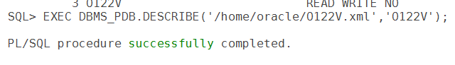
cd /nfsshare/oracle/backup
cp ~/O122V.xml .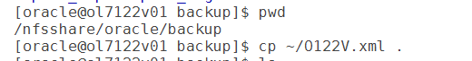
SET SERVEROUTPUT ON
BEGIN
IF DBMS_PDB.CHECK_PLUG_COMPATIBILITY('/nfsshare/oracle/backup/O122V.xml', 'O122V') THEN
DBMS_OUTPUT.PUT_LINE('SUCCESS');
ELSE
DBMS_OUTPUT.PUT_LINE('ERROR');
END IF;
END;
/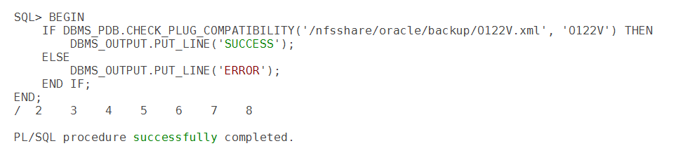
ERROR isn't automatically a blocker — moving a PDB to a higher release is expected to raise a "PDB needs upgrade" type of message. Review the details with:
SELECT type, message, status FROM pdb_plug_in_violations WHERE name = 'O122V'; and fix any other errors before continuing.While waiting for downtime to start, create a refreshable PDB on the target. Copying the PDB ahead of time avoids doing a full copy during downtime: when it's refreshed later, only the most recent changes from the source are applied, which is much faster than a full clone.
CREATE USER c##clone_user IDENTIFIED BY <password> CONTAINER=ALL;
GRANT CREATE SESSION, CREATE PLUGGABLE DATABASE TO c##clone_user CONTAINER=ALL;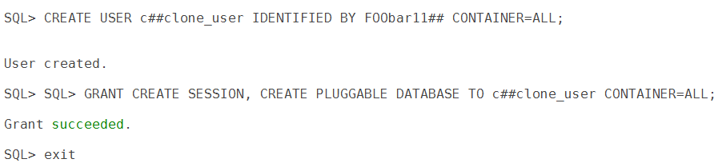
CREATE DATABASE LINK clone_link
CONNECT TO c##clone_user IDENTIFIED BY <password>
USING 'ol7122v01.scslabs.com/o122v';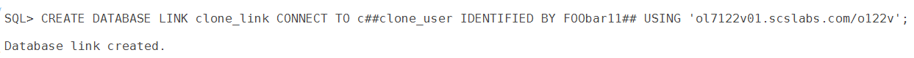
SELECT * FROM dual@clone_link;
SELECT count(*) FROM all_objects@clone_link;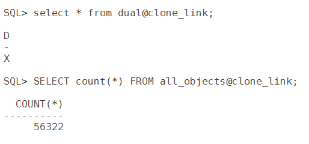
Create it with REFRESH MODE MANUAL, so it's only refreshed when you ask:
CREATE PLUGGABLE DATABASE O122V FROM O122V@clone_link
PARALLEL 4
REFRESH MODE MANUAL;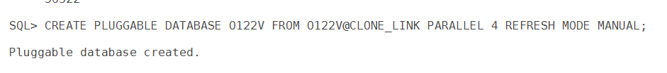
Refresh the PDB now and then to keep the final refresh short:
ALTER PLUGGABLE DATABASE O122V REFRESH;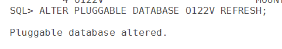
To prove that changes made after the clone reach the target, create a small test table in the source PDB:
ALTER SESSION SET CONTAINER=O122V;
CREATE TABLE tst1 (sno NUMBER, status VARCHAR2(10));
INSERT INTO tst1 VALUES (1, 'success');
COMMIT;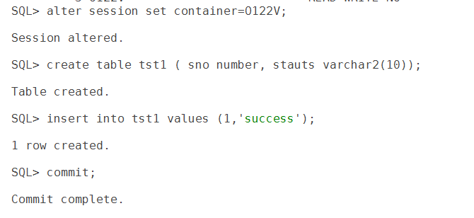
SYS schema. That's fine for a quick lab test, but in a real environment use an application schema — don't create your own objects in SYS.ALTER PLUGGABLE DATABASE O122V CLOSE IMMEDIATE;
SHOW PDBS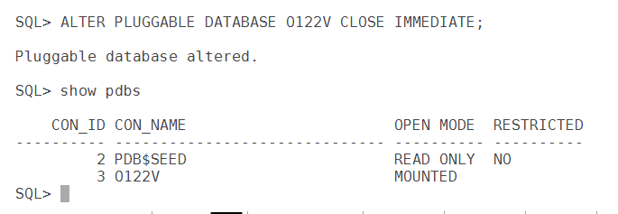
SHOW PDBS
ALTER PLUGGABLE DATABASE O122V REFRESH;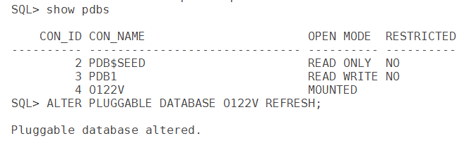
ALTER PLUGGABLE DATABASE O122V REFRESH MODE NONE;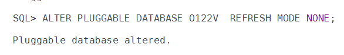
REFRESH MODE NONE, the PDB can no longer be refreshed from the source. Keep the source PDB closed but intact until the upgrade is validated — it's your fallback.ALTER PLUGGABLE DATABASE O122V OPEN UPGRADE;
SHOW PDBS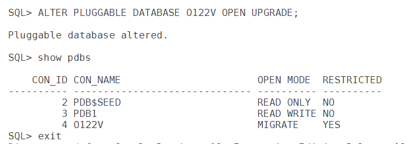
The PDB shows open mode MIGRATE and RESTRICTED = YES.
dbupgrade -c O122V -l /nfsshare/oracle/backup/upgrade -N 4| Option | Meaning |
|---|---|
-c O122V | Upgrade only this PDB (inclusion list). |
-l <dir> | Directory for the upgrade log files. |
-N 4 | Number of SQL processes to use for the PDB. |
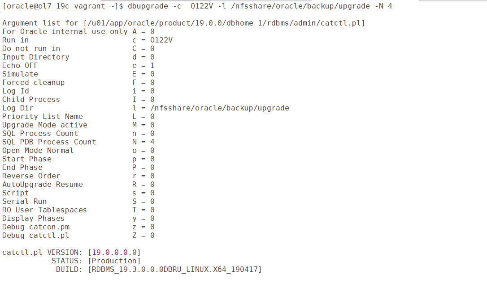
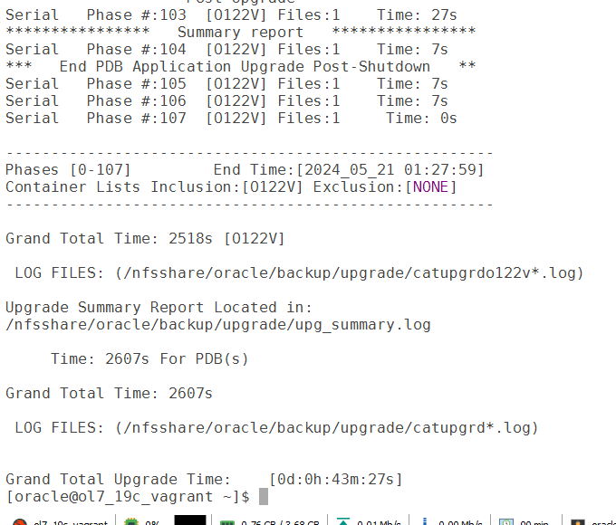
In this lab the upgrade took about 43 minutes. The summary report is written to upg_summary.log in the log directory — check it for errors.
ALTER PLUGGABLE DATABASE O122V OPEN;
SHOW PDBS
ALTER SESSION SET CONTAINER=O122V;
SELECT * FROM tst1;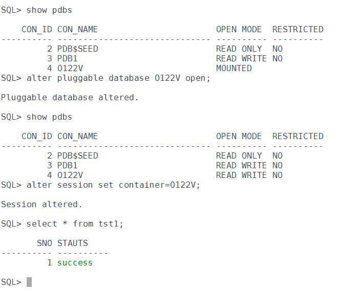
The PDB opens READ WRITE and unrestricted, and the test row inserted on the source just before downtime is there — the final refresh carried it across.
@?/rdbms/admin/utlrp.sql inside the PDB, confirm no open issues in pdb_plug_in_violations, apply the 19c release update with datapatch if the target home is patched, and save the open state with ALTER PLUGGABLE DATABASE O122V SAVE STATE; so it opens automatically after a restart.